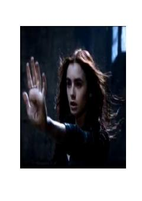

LQVampir tushlar ko'rgan talaba qizning sirli va dahshatli sarguzashtlari.
Moskvalik talaba Milana Shevchenko Marshall har kecha bir xil dahshatli tush ko'rib uyg'onadi — tushida u vampirga aylanib insonlar qonini ichayotgan bo'ladi. Buvisi va singlisi Feya bilan yashaydigan Milana ota-onasining sirli o'limidan beri g'alati hodisalar girdobida qoladi. Bolgariyada esa ulkan qasrda sirli kuchlar harakatga kelmoqda.